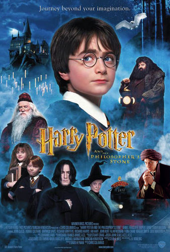
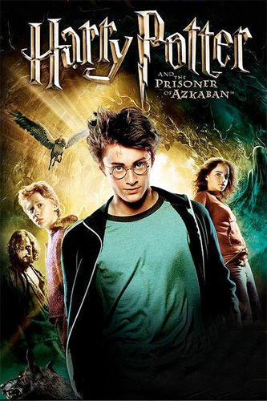
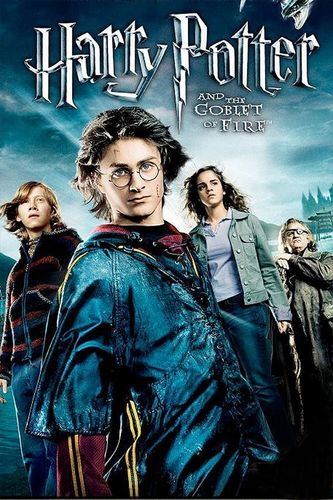
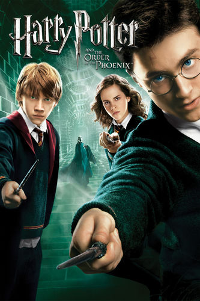
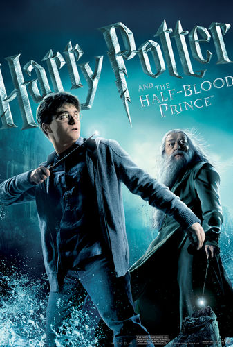
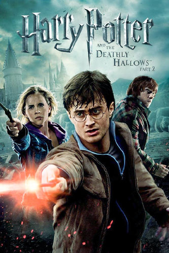

Even as a young man, Albus Dumbledore was "brilliant" - perhaps "the most brilliant student to ever attend Hogwarts". Dumbledore was known for having created unique magical spells and devices. His Deluminator was considered to be unique, and was of his own invention. He also discovered the twelve uses of dragon's blood, and worked on alchemy with Nicolas Flamel. Given this, it stands to reason that time - and, more specifically, perhaps through studying the Philosopher's Stone and the Elixir of Life ("immortality") with Nicolas Flamel - Dumbledore also studied time and time-travel. If he created the Deluminator, he could've easily possibly created the Time-Turner as well. Likewise, Dumbledore also seemed to be interested in the subject of time, something which he reflects upon (rather cryptically) to Hermione and Harry in Prisoner of Azkaban. He specifically says the following as well, implying that he knows how Time-Turners work: (which strongly implies he's used one on at least one occasion before) “Mysterious thing, Time. Powerful, and when meddled with, dangerous...you know the rules, Miss Granger. You must not be seen. About three turns should do it." (paraphrasing) The Time-Turner, or at least the one Hermione has, is marked with a very curious, cryptic poem - one that seems like something Dumbledore would say, or put, on the device - and also exactly mirrors the poetry / rhyming style "riddle" of the mermaid clue in Goblet of Fire, which was, presumably, come up with by Dumbledore. (After all, Dumbledore can speak Mermish.) "I mark the hours, every one, / Nor have I yet outrun the Sun. / My use and value, unto you, / Are gauged by what you have to do." (Prisoner of Azkaban) "Come seek us where our voices sound, / We cannot sing above the ground, / And while you're searching ponder this; / We've taken what you'll sorely miss, / An hour long you'll have to look, / And to recover what we took, / But past an hour, the prospect's black, / Too late, it's gone, it won't come back." (Goblet of Fire) On Pottermore, it was noted that one of the most massive breaches of 'time itself' was with the mishap of Eloise Mintumble, a Department of Mysteries employee, in 1899. By accident - and while presumably working on time-travel or Time-Turners - Mintumble was accidentally sent to the year 1402 for 5 days. She subsequently "caused the un-births of no less than 25 people in the present". (But how would anyone in the present know that she had changed time...unless someone time-travelled with her?) Case in point, 1899 - the same year Mintumble "disappeared" into time - was also (quite coincidentally) the same year that Dumbledore's mother was killed by an "outburst" of his sister, Ariana; the year he met Grindelwald; and the year that Ariana was killed in the three-way duel between Dumbledore, Grindelwald, and Aberforth. From a story perspective - especially with what Dumbledore tells Harry about his younger self - it makes sense that, in his grief and desperation, Dumbledore, perhaps...sought a way to travel back in time, and change it, so that Arianna - and, perhaps, his parents - never died. After all, Dumbledore, by his own admission, noted that his weakness was "power" - and power over time could definitely play into that. Dumbledore states: "So that, when my mother died, and I was left the responsibility of a damaged sister and a wayward brother, I returned to my village in anger and bitterness. Trapped and wasted, I thought! And then, of course, [Grindelwald] came." [...] "I had proven, as a very young man, that power was my weakness and temptation. I was safer at Hogwarts." It is stated that, in the 1910's, that Dumbledore became Professor of Transfiguration at Hogwarts. However, in 1899, he would've been still too-young to be a Hogwarts Professor, being only 17 or 18 years old. As we saw with the case of Tom Riddle in the 1940's, Riddle was deemed "too young" to become DADA professor at Hogwarts when he was 17-18. So...what did Dumbledore do, exactly, in between 1899 and the 1910's? (Other than, presumably, work with Nicolas Flamel on alchemy and other experiments...and maybe, perhaps, time-travel experiments?) Before 1899, there is no record in the Ministry of anyone - much less an employee - travelling back in time. Indeed, Mintumble's "mishap" (which caused "catastrophic" damage to the timeline) seems to be the very event which caused the Ministry to pass "hundreds of laws regulating and prohibiting time-travel" - to the extent where, as per Cursed Child, "owning or creating an un-authorized Time-Turner was punishable by being sent to Azkaban". As per Cursed Child, no one else, outside of the Ministry of Magic, was even able to replicate, or create, a Time-Turner of their own, until Theodore Nott in 2020 - over a century after Mintumble's incident in 1899. My thoughts on this, for the case of this theory, is because no one was as "brilliant" of a wizard as Albus Dumbledore - so, therefore, without Dumbledore, or Dumbledore's help (he was long dead by then), it took decades to re-create (or create) a new type of Time-Turner. (Possibly after Nott somehow got the blueprints / original plans / notes on how to make one.) Dumbledore was mentioned as making "many friends" during his days at Hogwarts, yet we actually only see less than a handful of them that are still alive in Harry's time. One, Bathilda Bagshot, also was dead by - or dies in - Deathly Hallows, and Elphias Doge, Dumbledore's BFF before Grindelwald, doesn't appear for long. Whta happened to Dumbledore's other "many friends"? Could it be that Eloise Mintumble was one of Dumbledore's "friends" - and, being an Unspeakable with access to the Time Room, he persuaded her to "help him" experiment with time-travel - and with the creation of the Time-Turner? Given there is no known precedent of a Time-Turner being given, even “on loan”, to a Hogwarts student - much less a 14-year-old one, like Hermione - it is quite likely that Albus Dumbledore, then the Supreme Mugwump of the International Confederation of Wizards, and the Chief Warlock of the Ministry of Magic’s Wizengamot (part of the MOM’s Department of Magical Law Enforcement, or DMLE), intervened to get the Time-Turner in Prisoner of Azkaban loaned on Hermione’s behalf. (the question is...why?) Time-Turners, in general, are one of the most - if not the most - heavily regulated, and forbidden, magical item regulated by the Ministry of Magic. Only the Ministry of Magic is known to possess Time-Turners (after all, "unauthorized" possession of one is punishable with being "sent to Azkaban"), and during the Battle of the Department of Mysteries in Order of the Phoenix, they're all destroyed. So how would Hermione even be able to get one...unless it was with Albus Dumbledore's assistance and influence? And how would Dumbledore, who isn't even an Unspeakable, be able to influence an entirely different department (DOM) within the Ministry - when his domain is in the DMLE (Wizengamot being a part of that branch)? Last, but not least, J.K. Rowling revealed that Gellert Grindelwald is (was?) "a Seer" - meaning that, not only can he give Prophecies, but he also has an ability related to control of time - or, more specifically, "seeing into the future with his Inner Eye". Albus Dumbledore also once told Harry Potter that "seeing into the future is incredibly difficult, because of the complexity of every single action and their consequences". However, there is one thing that can "secure the future" - and that's time-travel. If you can travel through time - and control "every single action and their consequences" - that sounds something exactly like something Dumbledore would research (at least, in his youth)
Both Dumbledore and Merlin have very similar, or identical, appearances, being old, Caucasian men with long, silver beards. Both also wear long, often brightly-colored robes and wizard hats, clearly making them as "magicians". Others have also noted the similarities in appearance between the two, including Doctor Who writer Chris Chibnall. "The first thing I said was no beard, no cloak, no staff [for Merlin]," says Chibnall, who developed the show with Tudors creator Michael Hirst. "This isn't Harry Potter land." (Source) [In this same production, Merlin was played by Jospeh Fiennes, the brother of Ralph Fiennes, who played Lord Voldemort in several Harry Potter films.] Both Dumbledore and Merlin (at least Disney's version) also appear to share very similar or identical personalities, including wisdom; knowledge; a strange sense of dress; and a penchant for being "odd", "weird", or "strange". According to the HP Wiki: Merlin is a wizard featured in many British legends. Though he first appeared under the name Myrddin Wyllt (Merlin the wild) in Welsh literature as a half-crazed prophet of the forest, he is perhaps most famous as a central figure in the Arthurian legend. He is most commonly depicted as the adviser of King Arthur. (Source) And, as per Percy Weasley of Dumbledore, in the books: Albus Dumbledore: "Welcome! Welcome to a new year at Hogwarts! Before we begin our banquet, I would like to say a few words. And here they are: Nitwit! Blubber! Oddment! Tweak! Thank you!" Harry Potter: "Is he — a bit mad?" Percy Weasley: "Mad? He's a genius! Best wizard in the world! But he is a bit mad, yes." Even the HP Wiki notes the two's similarities: Considered to be the most powerful wizard of his time, Dumbledore was benevolent and wise, a good wizard in the style of Merlin. [...] Albus Dumbledore, an extraordinarily talented and powerful wizard, resembled Merlin in many ways, such as the iconic long beard and prodigious magical skill. Both were "Muggle sympathizers", although Merlin's belief in the pure-blood elitism is unknown, it likely was the same as Dumbledore's. Both even (again, as per Disney's version) share intelligent bird familiars, with [Disney] Merlin having Archimades the owl, and Dumbledore having Fawkes the phoenix. Last, but certainly not least, the Merlin of the Potter universe was said by Rowling (via Pottermore) to have been "Sorted into Slytherin". Dumbledore, as we know, claimed to have been Sorted into Gryffindor. However, Dumbledore still possesses many traits that Slytherin himself was said to value: namely, ambition, cunning, and a desire for power. The HP Wiki also states: Dumbledore's greatest personality flaw, which he explained to Harry in 1998, was his desire for power. This stemmed primarily from his understanding of how exceptionally talented and intelligent he was, which led to a desire for fame, acknowledgment and glory in his younger days. He eventually found that those best suited for power are those who do not seek it. When he and Gellert Grindelwald were in school, they made plans to enslave Muggles and re-establish wizards as the natural rulers of the world. However, when his sister Ariana Dumbledore was killed during a duel between himself, Aberforth Dumbledore, and Grindelwald, any desire to accomplish this goal left him. In fact, the incident led to him declining any attempts by others to offer him any more power beyond that which he held as the Hogwarts headmaster. Indeed, many Potter fans see Dumbledore as a "manipulative old man", which is echoed in a very common and popular trope seen in Harry Potter fanfiction, aptly titled "evil Dumbledore", or "manipulative Dumbledore". How does this relate to Merlin, however? Merlin, in classic mythology and lore, is shown to be an incredibly manipulative figure. In fact, according to some legends, it is Merlin who is responsible for King Arthur's birth. Using magic, it was Merlin who aided in the deception of Lady Igraine, the wife of one of the knights waging war against King Uther Pendragon. Under the false guise of Igraine's husband, Uther slept with her, conceiving Arthur. What's more, as Uther had no heir, Merlin did this "for the greater good [of the kingdom and England]". Other legends claim that Merlin did so, with Uther's agreement that his first-born child (Arthur) would be "under Merlin's guardianship", or raised by Merlin himself. The opening to Disney's The Sword in the Stone relates just how important an heir to Uther's kingdom was, and why Merlin saw to ensure one was born: A legend is sung of when England was young And knights were brave and bold The good king [Uther] had died And no one could decide Who was rightful heir to the throne It seemed that the land would be torn by a war Or saved by a miracle alone And that miracle appeared in London town The sword in the stone. You know who else used to do things "for the greater good", and had "the Chosen child" under his guardianship? That's right...Dumbledore. Both Dumbledore and Merlin prove to be "masterminds" in their own rights, using manipulation tactics in order to ensure that the things they believe should come to pass, such as Harry defeating Voldemort, or Arthur becoming the King of England. Crucial to this theory is also Dumbledore's penchant for "secrets and lies". Even despite taking on a mentor role with Harry, Dumbledore kept a great many secrets from Harry, as well as the general public. In the books, Dumbledore's brother, Aberforth, says the following of Albus: "I knew my brother, Potter. He learned secrecy at our mother's knee. Secrets and lies, that's how we grew up, and Albus... he was a natural... How can you be sure, Potter, that my brother wasn't more interested in the greater good than in you? How can you be sure you aren't dispensable, just like my little sister?"
Hello. As the title says, this is about the Deathly Hallows where people are saying, in the movie then the Deathly Hallows is: Voldemort - Who sought power Snape - Who lost a loved one Harry Potter - Who greeted death as old friend. // Then someone says Death is Dumbledore, and some says Dumbledore is all three. Now, I'm new with the theories and also new to speculate about the series. But then again, it's all speculation - aka. Something that we are wondering about and I had this speculation and I wanted to share to hear other people's opinion. (I'm not saying it's this way, I just want to hear people's thought about this) I'm talking about this story: https://www.youtube.com/watch?v=aJSh1zkPEvc I can understand people believe it's Voldemort, Snape and Harry potter who fits as the three brothers, but I choose not to believe so. Why? Well let me introduce you to my speculation. The first brother (Antioch Peverell) "wished to have the most powerful wand out of his combative personality." (Deathly Hallows, Harry potter wiki) My thought of this: - It is only natural, that we put Voldemort in here. He wanted to have the strongest wand. But, I think it's unfair if we put Voldemort in this. Because, I believe it's possible to relate some sort of similiarty to the story of how the first brother lost his wand, instead of the reason of wanting the object. However, Voldemort does have some sort of part in this. When Voldemort thought Snape was the "owner" of the wand, then Voldemort actually slit Snape - anyone recall? Voldemort is one of many who wanted to possess the wand. So, I actually think Voldemort would be more fitting as the person who stole the wand. "His throat was slit in his sleep by another wizard who stole the Elder Wand." ( Just for a heads up, Dumbledore could not be seen as the first brother at all. Because he used the wand to serve good. ) Number two brother: Cadmus - The ressurection stone. Now, people believe it's Snape. Why? Because he lost a dear one - which was Lily, who's Harry Potter's mother. But it doesn't fit much, Snape never really had the stone and Snape never really did commit suicide. He only lost a dear one, and that's it. There's a lot of people who lost a dear one in Harry Potter, so I felt it would be easiest to put Snape as the second brother - but that might not be the case. I'd actually put Dumbledore, as the second brother. According to harrypotter.wikia, then: "Dumbledore's heart yearned for one Hallow in particular- the Resurrection Stone, which he believed could bring back his deceased parents and other lost loved ones" The third brother; "It was only when he had attained great age that the youngest brother finally took off the Cloak of Invisibility and gave it to his son." People believe it's Harry potter that fits as the last brother, but I didn't see any way that Harry potter fit the role. If we look at the story, then it says "It was only when he had attained great age that the youngest brother finally took off the Cloak of invisibility and gave it to his son" I believe it's Harry Potter's dad, who's seen as the third brother; Mostly because it's said that the third brother gave the cloak to his son. ( Of course, James did not take off the cloak and greeted death as a old friend ) But neither did Harry. At the end of Harry Potter - Deathly Hallows part 2, where Harry went down to face Voldemort, then Harry potter didn't actually greet death as an old friend. Harry was nervous, he even asked about it hurt. It was something he had to do, he didn't even welcome death. There's a difference between something you have/must do and something you'd willingly do. James, who is Harry's dad - he welcomed Death. He had the opportunity to wear the cloak and disappear if he wanted to, but he did not. Also, James would actually have handed the cloak personally over to his own son - but he got murdered afterall, which in my personal opinion fits more as the third brother than Harry Potter. And it does state in wikia, that Harry Potter is a living descendant of the third brother but his dad seemed to fit more as the role of the Third brother than Harry potter, also Harry is "Descendant of the third brother". I'm aware of how much reading, there is in my speculation. If someone is lazy and does not want to read my reason behind my thought - then this is a quick summary. Please, it's just my personal opinion - it might be wrong, also. I just wondered this and wanted to share. 1st Brother = ( I don't know for this, and I might need your help. But I do believe, Voldemort is the Assassin in the story - the one who kills assassinate's the brother.) 2nd Brother = Dumbledore. (He wanted to use the stone to resurrect his family and loved ones, and wanted this object the most) 3rd Brother = James Potter (He greeted his own dead when he had to protect his son, and was going to hand the Cloak of Invisibility to his own son, Harry Potter) Harry Potter was the Master of Death. He had all three objects, and the reason Dumbledore was not the Master of Death. "Harry Potter is the only known Master of Death, having gathered and mastered all three Hallows; he did not unite all three of them physically at the same moment, as he possessed no more than two at the same time. Albus Dumbledore had also gathered all three, though physically owning no more than two at the same time, and did not master the usage of the Cloak." If you read all what I wrote, then thank you. If there's some confusion or question about what I wrote, then please let me know